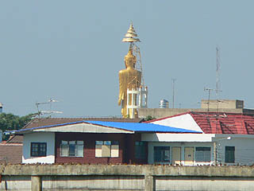

おまけその２
ワット
クラン/サムプラカン県
WatKlang/SamutPlakan
ムアンボランの園内から大仏が見えた。
始めは園内の展示かと思ったが、あまりにも遠いし、手前には普通の住宅があるので、ムアンボランとは関係ないはず。

この時点で寺の名前は一切分からなかったが後で地図で確認するとワットクランという寺だということが判明。
交通量の激しい幹線道路の向かいにいたので結局境内には入れず、道の向かいから眺めただけです。
大仏さんの後ろには塔のようなものが組まれ、わざわざ頭上の笠を支えている。ご苦労様です。
大きさとしては像だけで15〜20メートルといったところだろうか。
立像としてはまあまあの大きさだ。
それにしてもタイには有名無名の大仏さんがたくさんある。
大仏に向かう途中にも大仏があったりして、一体何体の大仏があるのかすら分からない程大仏にあふれている。
微笑みの国などといわれるが、私にとっては大仏だらけの国、としかいいようがない。
そんな大仏天国タイで再び大仏巡りをする事を夢見つつ、泰国珍寺武者修業、これにてお開きとさせていただきます。
おしまい
泰国珍寺武者修行
珍寺大道場 HOME